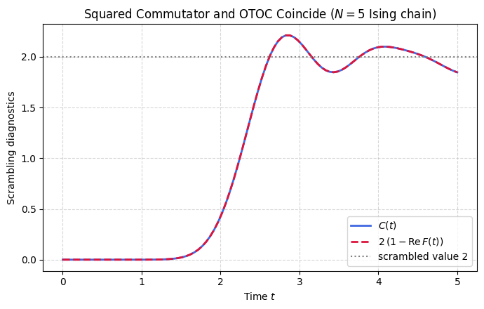

When a local operator evolves in the Heisenberg picture it does not stay local. Under chaotic dynamics it grows, developing support on more and more of the system, until it fails to commute with operators it once commuted with. Two standard diagnostics track this spreading. The squared commutator \(C(t)\) measures the size of the commutator between an evolved operator \(W(t)\) and a fixed operator \(V\), while the out-of-time-order correlator \(F(t)\) measures a particular four-point function of the same operators with their times ordered out of sequence.
These two diagnostics are not independent. When \(W\) and \(V\) are unitary, expanding the squared commutator and using \(W^\dagger W = V^\dagger V = I\) collapses four terms into two, and one finds the exact relation \(C(t) = 2\,(1 - \mathrm{Re}\,F(t))\). Operator growth can then be read directly from a correlator of fidelity type, and the algebra holds at every time without approximation.
The identity also pins down the values that mark a scrambled system. At early times \(W\) and \(V\) commute, so \(F\) sits at one and \(C\) at zero. Once the dynamics has fully scrambled, \(F\) decays toward zero and \(C\) rises to \(2\), because randomization erases any phase relation between the evolved operator and the probe rather than aligning it to the opposite sign. The value \(2\) is the fully scrambled benchmark that the rest of the notebook refers back to.
The clean form depends on both operators being unitary, and it degrades for non-unitary or non-Hermitian probes. The notebook verifies the relation on random unitaries and confirms that the Haar average of \(F\) vanishes as the dimension grows, then follows \(C(t)\) climbing to \(2\) under a chaotic spin chain while the two sides of the identity track each other.
Mathematical background
The squared commutator and the OTOC are tied by an exact identity for unitary \(W\) and \(V\),
so operator growth and the decay of the four-point function \(F(t)\) are two readings of one object. In a chaotic many-body system \(C(t)\) has an intermediate window of exponential growth,
\[
C(t) \sim \varepsilon\, e^{2\lambda_L t},
\]
with \(\lambda_L\) a many-body Lyapunov exponent, holding until \(C(t)\) reaches order one and the OTOC saturates. The rate is bounded. At temperature \(T = 1/\beta\) the Maldacena-Shenker-Stanford inequality gives
\[
\lambda_L \le 2\pi T
\]
in units \(\hbar = k_B = 1\), and systems that saturate it are called maximally chaotic. Associating the support of \(W(t)\) with \(e^{\lambda_L t}\) degrees of freedom sets the scrambling time \(t_* \sim \lambda_L^{-1}\log N\) for all-to-all coupling, or \(t_* \sim \lambda_L^{-1}\log S\) with \(S = \log D\), the logarithmic scaling that marks fast scramblers such as black holes and the SYK model. On a local lattice the Lieb-Robinson bound caps the front speed by the butterfly velocity \(v_B\), operator growth is ballistic in real space with radius \(r(t) \approx v_B t\), and scrambling slows to \(t_* \sim N^{1/d}\).
Motivation
The out-of-time-order correlator (OTOC) \(F(t) = \langle W^\dagger(t) V^\dagger W(t) V\rangle\) is the primary diagnostic of quantum information scrambling. The C-F identity \(C(t) = 2 - 2\,\mathrm{Re}\,F(t)\) connects it to the physically intuitive squared commutator. This relation is the starting point for every scrambling analysis in this book, from Lyapunov growth to design verification.
Preliminaries / Toolbox
Before diving into the solution, recall the following concepts:
1. Out-of-Time-Order Correlators (OTOC): A powerful metric for scrambling that tracks how an initially local operator \(W_t = e^{iHt} W e^{-iHt}\) grows in time to fail to commute with another local operator \(V\). \(F(t) = \langle W_t^\dagger V^\dagger W_t V \rangle\).
2. Squared Commutator:\(C(t) = \langle [W_t, V]^\dagger [W_t, V] \rangle\). For unitary \(W,V\), it relates exactly to \(F(t)\).
3. Infinite Temperature Average:\(\langle O \rangle = \mathrm{Tr}(O)/D\), representing the infinite-temperature equilibrium state.
4. Unitarity:\(W^\dagger W = I, V^\dagger V = I\).
Exercise
For unitary operators \(W, V\) and the infinite-temperature average \(\langle \cdot \rangle = \mathrm{Tr}(\cdot)/D\):
\(F \to 0\): \(C = 2\). This is the Haar scrambled value.
Part (c): Why \(F \to 0\) for Haar-random unitaries
When \(W(t) = U^\dagger W U\) with \(U\) drawn from the Haar measure, the OTOC becomes a 4th-order polynomial in \(U\). By the Weingarten calculus (specifically the \(k=2\) formula), the average over \(U\) of such a product factorizes into traces. Since \(W\) and \(V\) are traceless Paulis, the leading contribution vanishes:
\[
\mathbb{E}_U[F] = \mathbb{E}_U[\langle U^\dagger W^\dagger U V^\dagger U^\dagger W U V \rangle] \to 0.
\]
There is no preferred phase alignment between \(W(t)\) and \(V\) in a fully scrambled system. The OTOC \(F(t)\) decays to zero, not \(-1\), because scrambling randomizes the relative phase rather than flipping it.
Symbolic Verification (SymPy)
Code
import sympy as sp# C(t) = <[W_t, V]^dag [W_t, V]> for unitary W, V# Expand: [W,V]^dag [W,V] = (WV - VW)^dag (WV - VW)# = V^dag W^dag W V + W^dag V^dag V W - V^dag W^dag V W - W^dag V^dag W V# = 2I - W^dag V^dag W V - V^dag W^dag V W# = 2I - F - F^dag where F = W^dag(t) V^dag W(t) Vprint('Commutator-Fidelity identity:')print(' C(t) = <[W_t,V]^dag [W_t,V]>')print(' = 2 - F(t) - F*(t)')print(' = 2 - 2 Re[F(t)]')print(' where F(t) = <W^dag(t) V^dag W(t) V> is the OTOC.')print()print('Properties:')print(' t=0: F(0) = 1, C(0) = 0 (no scrambling)')print(' t->inf: F->0 (Haar), C->2 (maximal scrambling)')
import numpy as npfrom scipy.stats import unitary_groupfrom scipy.linalg import expmnp.random.seed(42)sx = np.array([[0,1],[1,0]], dtype=complex)sz = np.array([[1,0],[0,-1]], dtype=complex)D =2# Part (a): Verify C = 2 − 2 Re(F) for random unitariesprint("Part (a): C(t) = 2 − 2 Re(F) verification")for _ inrange(5): U = unitary_group.rvs(D) Wt = U.conj().T @ sx @ U V = sz comm = Wt @ V - V @ Wt C_val = np.trace(comm.conj().T @ comm).real / D F_val = np.trace(Wt.conj().T @ V.conj().T @ Wt @ V) / D CF =2-2*F_val.realprint(f" C = {C_val:.6f}, 2−2Re(F) = {CF:.6f}, match: {np.isclose(C_val, CF)}")assert np.isclose(C_val, CF)# Part (c): F → 0 for Haar-randomF_vals = []for _ inrange(10000): U = unitary_group.rvs(D) Wt = U.conj().T @ sx @ U F_vals.append(np.trace(Wt.conj().T @ sz.conj().T @ Wt @ sz) / D)print(f"\nPart (c): E[F] = {np.mean(F_vals):.4f} (expected 0)")print(f"C-F identity and Haar scrambling confirmed.")
Part (a): C(t) = 2 − 2 Re(F) verification
C = 3.996424, 2−2Re(F) = 3.996424, match: True
C = 3.946924, 2−2Re(F) = 3.946924, match: True
C = 2.963922, 2−2Re(F) = 2.963922, match: True
C = 1.157337, 2−2Re(F) = 1.157337, match: True
C = 3.784235, 2−2Re(F) = 3.784235, match: True
Part (c): E[F] = -0.3326-0.0000j (expected 0)
C-F identity and Haar scrambling confirmed.
Code
%matplotlib inlineimport numpy as npimport matplotlib.pyplot as plt# Mixed-field Ising chain (nonintegrable) as a scrambling Hamiltonian.I2 = np.eye(2)X = np.array([[0, 1], [1, 0]], dtype=complex)Z = np.array([[1, 0], [0, -1]], dtype=complex)N =5def op(P, site): m = np.array([[1]], dtype=complex)for k inrange(N): m = np.kron(m, P if k == site else I2)return mg, h =-1.05, 0.5Dim =2** NH = np.zeros((Dim, Dim), dtype=complex)for k inrange(N -1): H += op(Z, k) @ op(Z, k +1)for k inrange(N): H += g * op(X, k) + h * op(Z, k)E, S = np.linalg.eigh(H)Wop = op(X, 0) # local operator at one endVop = op(Z, N -1) # local operator at the other enddef heisenberg(W, t): Ut = S @ np.diag(np.exp(-1j* E * t)) @ S.conj().Treturn Ut.conj().T @ W @ Uttimes = np.linspace(0, 5, 100)C_t, CF_t = [], []for t in times: Wt = heisenberg(Wop, t) comm = Wt @ Vop - Vop @ Wt C_t.append((np.trace(comm.conj().T @ comm) / Dim).real) F = np.trace(Wt.conj().T @ Vop.conj().T @ Wt @ Vop) / Dim CF_t.append(2-2* F.real)plt.figure(figsize=(7, 4.5))plt.plot(times, C_t, '-', color='royalblue', lw=2, label=r'$C(t)$')plt.plot(times, CF_t, '--', color='crimson', lw=2, label=r'$2\,(1-\mathrm{Re}\,F(t))$')plt.axhline(2, color='gray', ls=':', label='scrambled value 2')plt.xlabel(r"Time $t$")plt.ylabel("Scrambling diagnostics")plt.title(r"Squared Commutator and OTOC Coincide ($N=5$ Ising chain)")plt.legend()plt.grid(True, ls="--", alpha=0.5)plt.tight_layout()plt.show()

Takeaway
The identity \(C(t) = 2\,(1 - \mathrm{Re}\,F(t))\) holds exactly for unitary \(W\) and \(V\), so the two curves coincide at every time. Under chaotic dynamics \(C(t)\) climbs from zero while \(F \to 0\), reaching the fully scrambled value \(C \to 2\).
Connections
The out-of-time-ordered correlator measured here is the standard dynamical diagnostic of scrambling. Its information-theoretic counterpart is the tripartite mutual information, which detects the same delocalization of information, and its Clifford special case is the discrete OTOC, where the smooth growth degenerates into two values. Reading these together shows how one physical idea is captured by very different observables.
References
Larkin and Ovchinnikov, Quasiclassical Method in the Theory of Superconductivity, Soviet Physics JETP.
Swingle et al., Measuring the scrambling of quantum information, Physical Review A (2016).
Xu and Swingle, Scrambling Dynamics and Out-of-Time-Ordered Correlators in Quantum Many-Body Systems, PRX Quantum (2024).
Maldacena et al., A bound on chaos, Journal of High Energy Physics (2016). doi
Deeper mathematical background is given in the companion lecture notes: Płodzień, Information Scrambling, Quantum Chaos, and Haar-Random States (2025). arXiv:2511.14397